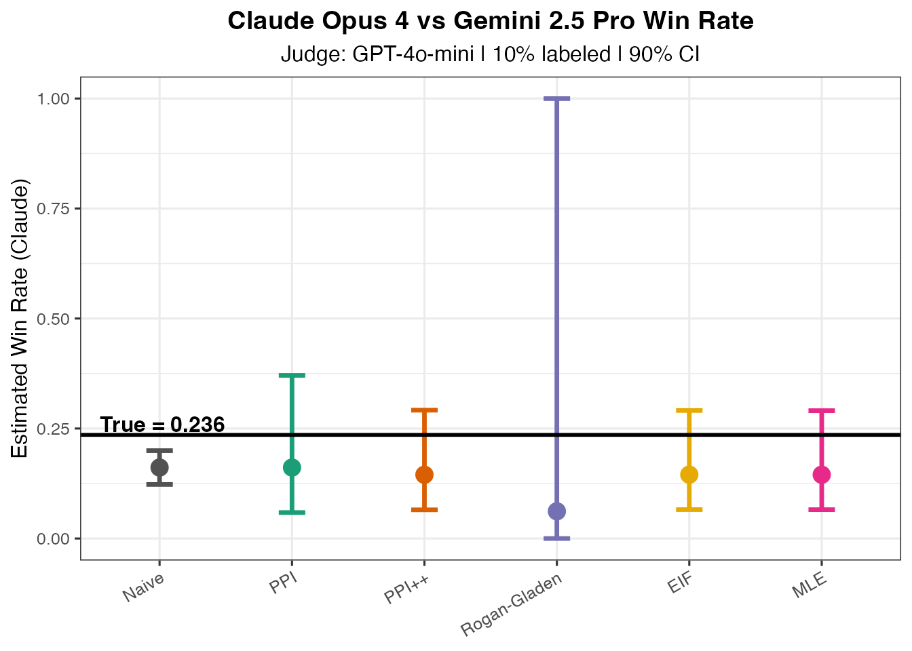

Real Data Example: GPT-4o-mini as Judge
real-data-example.RmdOverview
This vignette demonstrates applying debiasing methods to real LLM-as-a-judge data. We use GPT-4o-mini as a judge to evaluate pairwise comparisons between Claude Opus 4 and Gemini 2.5 Pro, comparing judge decisions against human preferences from Chatbot Arena.
Load Data
The package includes example judge results from GPT-4o-mini evaluating Claude Opus 4 vs Gemini 2.5 Pro comparisons:
# Load from package extdata
json_path <- system.file("extdata", "example_judge_data.json",
package = "debiasLLMReporting")
judge_data <- fromJSON(json_path)
head(judge_data)
#> id model_a
#> 1 71fdece3-2416-4f9c-ad22-17d759811c9d claude-opus-4-20250514
#> 2 8e4e7918-3754-4c72-bd02-e99e67122f32 gemini-2.5-pro
#> 3 f582a2c0-668b-47a3-8de7-153c57fde3f5 claude-opus-4-20250514
#> 4 d28f59c3-66fb-49fe-8b2b-00f3d6e853b3 claude-opus-4-20250514
#> 5 3bb70211-d6b1-463b-a785-79dff5a338d8 gemini-2.5-pro
#> 6 2e928f7f-e1a9-4b7d-8287-cce661d8f1fb claude-opus-4-20250514
#> model_b human_winner judge_pick error
#> 1 gemini-2.5-pro model_b B <NA>
#> 2 claude-opus-4-20250514 model_a A <NA>
#> 3 gemini-2.5-pro model_a A <NA>
#> 4 gemini-2.5-pro model_b B <NA>
#> 5 claude-opus-4-20250514 model_a A <NA>
#> 6 gemini-2.5-pro model_b B <NA>Prepare Data
The data contains pairwise comparisons where model positions (A vs B) are randomized. We need to normalize to consistently measure Claude’s win rate:
df <- judge_data %>%
filter(!is.na(judge_pick)) %>%
mutate(
# Identify which position Claude is in
claude_is_a = (model_a == "claude-opus-4-20250514"),
# Y = 1 if human preferred Claude, 0 otherwise
Y = case_when(
claude_is_a & human_winner == "model_a" ~ 1L,
!claude_is_a & human_winner == "model_b" ~ 1L,
TRUE ~ 0L
),
# Yhat = 1 if judge picked Claude, 0 otherwise
Yhat = case_when(
claude_is_a & judge_pick == "A" ~ 1L,
!claude_is_a & judge_pick == "B" ~ 1L,
TRUE ~ 0L
)
)
cat("Total comparisons:", nrow(df), "\n")
#> Total comparisons: 276
cat("Human preference for Claude:", round(mean(df$Y), 3), "\n")
#> Human preference for Claude: 0.236
cat("Judge preference for Claude:", round(mean(df$Yhat), 3), "\n")
#> Judge preference for Claude: 0.159Split into Calibration and Test Sets
We use 10% of data as the labeled calibration set (where we have both human and judge labels). In practice, only the calibration set would require expensive human annotation.
LABEL_RATIO <- 0.10
N <- nrow(df)
m <- max(4L, round(LABEL_RATIO * N))
n <- N - m
# Random split
idx_cal <- sample(N, m)
idx_test <- setdiff(seq_len(N), idx_cal)
Y_cal <- df$Y[idx_cal]
Yhat_cal <- df$Yhat[idx_cal]
Yhat_test <- df$Yhat[idx_test]
cat("Calibration set size:", m, "(", round(100*m/N, 1), "% )\n")
#> Calibration set size: 28 ( 10.1 % )
cat("Test set size:", n, "\n")
#> Test set size: 248Estimate Confusion Matrix
From the calibration set, we estimate the judge’s sensitivity and specificity:
m0 <- sum(Y_cal == 0)
m1 <- sum(Y_cal == 1)
# Specificity: P(judge says not-Claude | human says not-Claude)
q0_hat <- mean(Yhat_cal[Y_cal == 0] == 0)
# Sensitivity: P(judge says Claude | human says Claude)
q1_hat <- mean(Yhat_cal[Y_cal == 1] == 1)
# Positive rate in test set
p_hat <- mean(Yhat_test)
cat("Estimated specificity (q0):", round(q0_hat, 3), "\n")
#> Estimated specificity (q0): 0.875
cat("Estimated sensitivity (q1):", round(q1_hat, 3), "\n")
#> Estimated sensitivity (q1): 0.25
cat("Test set positive rate:", round(p_hat, 3), "\n")
#> Test set positive rate: 0.161Apply All Estimators
ALPHA <- 0.10 # 90% confidence intervals
# Ground truth (using all human labels - in practice unknown for test set)
theta_true <- mean(df$Y)
# 1. Naive (no correction)
naive_theta <- p_hat
naive_var <- p_hat * (1 - p_hat) / n
z_alpha <- qnorm(1 - ALPHA / 2)
naive_ci <- c(
pmax(naive_theta - z_alpha * sqrt(naive_var), 0),
pmin(naive_theta + z_alpha * sqrt(naive_var), 1)
)
# 2. PPI
ppi_result <- ppi_point_and_ci(
Y_L = Y_cal,
f_L = Yhat_cal,
f_U = Yhat_test,
alpha = ALPHA
)
# 3. PPI++
ppi_pp_result <- ppi_pp_point_and_ci(
Y_L = Y_cal,
f_L = Yhat_cal,
f_U = Yhat_test,
alpha = ALPHA
)
# 4. Rogan-Gladen
rg_result <- rg_point_and_ci(
p_hat = p_hat,
q0_hat = q0_hat,
q1_hat = q1_hat,
n = n,
m0 = m0,
m1 = m1,
alpha = ALPHA
)
# 5. EIF (Efficient Influence Function)
eif_result <- eif_point_and_ci(
Y_cal = Y_cal,
Yhat_cal = Yhat_cal,
Yhat_test = Yhat_test,
alpha = ALPHA
)
# 6. MLE (Joint Maximum Likelihood)
mle_result <- mle_point_and_ci(
Y_cal = Y_cal,
Yhat_cal = Yhat_cal,
Yhat_test = Yhat_test,
alpha = ALPHA
)Results Summary
results <- tibble(
Method = c("True", "Naive", "PPI", "PPI++", "Rogan-Gladen", "EIF", "MLE"),
Estimate = c(
theta_true,
naive_theta,
ppi_result$theta,
ppi_pp_result$theta,
rg_result$theta,
eif_result$theta,
mle_result$theta
),
CI_Lower = c(NA, naive_ci[1], ppi_result$ci_lower, ppi_pp_result$ci_lower,
rg_result$ci_lower, eif_result$ci_lower, mle_result$ci_lower),
CI_Upper = c(NA, naive_ci[2], ppi_result$ci_upper, ppi_pp_result$ci_upper,
rg_result$ci_upper, eif_result$ci_upper, mle_result$ci_upper)
) %>%
mutate(
Bias = round(Estimate - theta_true, 4),
CI_Width = round(CI_Upper - CI_Lower, 3),
Covers = CI_Lower <= theta_true & CI_Upper >= theta_true
)
knitr::kable(results, digits = 3, caption = "Estimator Comparison: Claude Opus 4 Win Rate")| Method | Estimate | CI_Lower | CI_Upper | Bias | CI_Width | Covers |
|---|---|---|---|---|---|---|
| True | 0.236 | NA | NA | 0.000 | NA | NA |
| Naive | 0.161 | 0.123 | 0.200 | -0.074 | 0.077 | FALSE |
| PPI | 0.161 | 0.059 | 0.371 | -0.074 | 0.312 | TRUE |
| PPI++ | 0.145 | 0.065 | 0.292 | -0.091 | 0.226 | TRUE |
| Rogan-Gladen | 0.062 | 0.000 | 1.000 | -0.174 | 1.000 | TRUE |
| EIF | 0.145 | 0.066 | 0.291 | -0.090 | 0.225 | TRUE |
| MLE | 0.145 | 0.066 | 0.291 | -0.091 | 0.225 | TRUE |
Visualization
METHOD_COLORS <- c(
"Naive" = "#525252",
"PPI" = "#1B9E77",
"PPI++" = "#D95F02",
"Rogan-Gladen" = "#7570B3",
"EIF" = "#E6AB02",
"MLE" = "#E7298A"
)
plot_df <- results %>%
filter(Method != "True") %>%
mutate(Method = factor(Method, levels = names(METHOD_COLORS)))
ggplot(plot_df, aes(x = Method, y = Estimate, color = Method)) +
geom_point(size = 4) +
geom_errorbar(aes(ymin = CI_Lower, ymax = CI_Upper),
width = 0.2, linewidth = 1.2) +
geom_hline(yintercept = theta_true, linetype = "solid",
color = "black", linewidth = 1) +
annotate("text", x = 0.55, y = theta_true + 0.025,
label = paste("True =", round(theta_true, 3)),
hjust = 0, fontface = "bold") +
scale_color_manual(values = METHOD_COLORS) +
labs(
title = "Claude Opus 4 vs Gemini 2.5 Pro Win Rate",
subtitle = paste0("Judge: GPT-4o-mini | ", round(100*m/N),
"% labeled | ", 100*(1-ALPHA), "% CI"),
x = NULL,
y = "Estimated Win Rate (Claude)"
) +
theme_bw(base_size = 12) +
theme(
legend.position = "none",
plot.title = element_text(hjust = 0.5, face = "bold"),
plot.subtitle = element_text(hjust = 0.5),
axis.text.x = element_text(angle = 30, hjust = 1)
) +
coord_cartesian(ylim = c(0, 1))
Interpretation
Naive estimate: Uses only judge predictions without correction. May be biased if GPT-4o-mini has systematic preferences.
PPI/PPI++: Uses the calibration residuals to correct for systematic differences between judge and human preferences.
Rogan-Gladen: Classical misclassification correction using estimated sensitivity/specificity.
EIF: Efficient influence function estimator that achieves semiparametric efficiency.
MLE: Joint maximum likelihood estimation that simultaneously estimates prevalence, sensitivity, and specificity.
The debiased estimates should be closer to the true human preference rate, with confidence intervals that provide valid coverage even when the judge is imperfect.
Session Info
sessionInfo()
#> R version 4.4.1 (2024-06-14)
#> Platform: aarch64-apple-darwin20
#> Running under: macOS 15.7
#>
#> Matrix products: default
#> BLAS: /Library/Frameworks/R.framework/Versions/4.4-arm64/Resources/lib/libRblas.0.dylib
#> LAPACK: /Library/Frameworks/R.framework/Versions/4.4-arm64/Resources/lib/libRlapack.dylib; LAPACK version 3.12.0
#>
#> locale:
#> [1] en_US.UTF-8/en_US.UTF-8/en_US.UTF-8/C/en_US.UTF-8/en_US.UTF-8
#>
#> time zone: America/Los_Angeles
#> tzcode source: internal
#>
#> attached base packages:
#> [1] stats graphics grDevices utils datasets methods base
#>
#> other attached packages:
#> [1] ggplot2_4.0.1 dplyr_1.1.4 jsonlite_2.0.0
#> [4] debiasLLMReporting_0.0.1
#>
#> loaded via a namespace (and not attached):
#> [1] gtable_0.3.6 highr_0.11 compiler_4.4.1
#> [4] tidyselect_1.2.1 jquerylib_0.1.4 systemfonts_1.1.0
#> [7] scales_1.4.0 textshaping_0.4.0 yaml_2.3.10
#> [10] fastmap_1.2.0 R6_2.6.1 labeling_0.4.3
#> [13] generics_0.1.4 knitr_1.48 htmlwidgets_1.6.4
#> [16] tibble_3.3.0 desc_1.4.3 bslib_0.9.0
#> [19] pillar_1.11.1 RColorBrewer_1.1-3 rlang_1.1.6
#> [22] cachem_1.1.0 xfun_0.48 fs_1.6.6
#> [25] sass_0.4.10 S7_0.2.1 cli_3.6.5
#> [28] pkgdown_2.1.1 withr_3.0.2 magrittr_2.0.4
#> [31] digest_0.6.37 grid_4.4.1 rstudioapi_0.17.0
#> [34] lifecycle_1.0.4 vctrs_0.6.5 evaluate_1.0.1
#> [37] glue_1.8.0 farver_2.1.2 numDeriv_2016.8-1.1
#> [40] ragg_1.3.3 rmarkdown_2.28 tools_4.4.1
#> [43] pkgconfig_2.0.3 htmltools_0.5.8.1